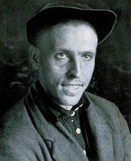
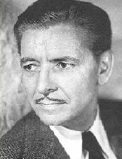

Sunday, January the 30th, 2005
back to: title, date or indexes

Aleksei Grigorievich.Stakhanov was the heroic Soviet worker who, in 1935, extracted one-hundred-and-two tons of coal in a six-hour shift, exceeding the norm more than sevenfold. Stakhanov was from the Donets Basin, one of a number of basins we will be examining here at Hooting Yard in the coming weeks. The abiding fascination of basins is subject to almost criminal neglect, a situation we hope to put right. Please note, however, that not all basins are sites of coal extraction, and certainly not of heroic works of coal extraction by Stakhanovites.

It is unlikely that Ronald Colman ever extracted coal from a basin in his life, heroically or otherwise, but he had other talents, one of which led to him being known as “the man with the velvet voice”. Colman will never be forgotten, of course, for he starred alongside Greer Garson in the single most heart-rending tear-jerker of all time, Random Harvest. Watch it and weep, and then watch it again and weep again. Is there another film with so preposterous a plot which remains utterly and completely captivating at the umpteenth viewing?